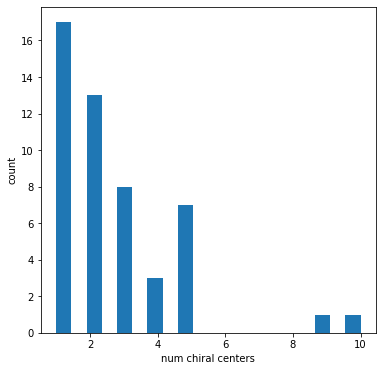
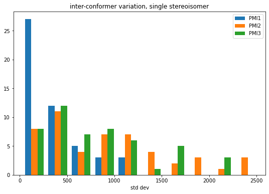
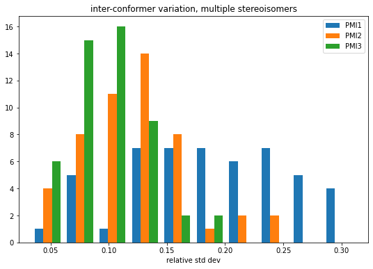
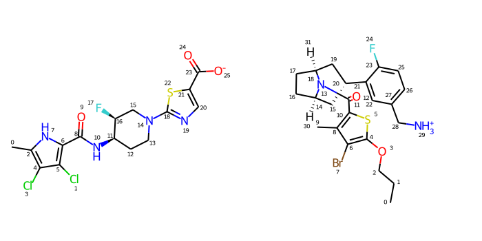

Which is more important, stereochemistry or conformational variability?
Published
June 22, 2022
Earlier this year Axel asked about the differences in PMI (princile moments of inertia) values between different stereoisomers of the same molecule. I guessed, but wasn’t sure, that the differences arising from different stereoisomers would be small relative to those arising from inter-conformer variability in the structure.
2022.03.2
%pylab is deprecated, use %matplotlib inline and import the required libraries.
Populating the interactive namespace from numpy and matplotlib
Start by reading in 50 molecules from the platinum dataset which have at least one chiral center.
Note that as of the 2022.03.3 release of the RDKit the explicit call to AssignStereochemistryFrom3D() is no longer necessary for molecules which have 3D conformers. We changed the default behavior so that this function is called whenever a molecule has a 3D conformer.
with Chem.SDMolSupplier('../data/platinum_dataset_2017_01.sdf',removeHs=False) as suppl: ms = []whilelen(ms)<50: m =next(suppl)ifnot m:continue Chem.AssignStereochemistryFrom3D(m)iflen(Chem.FindMolChiralCenters(m))<1:continue ms.append(m)
Look at the number of chiral centers present in each molecule
figsize(6,6)hist([len(Chem.FindPotentialStereo(m)) for m in ms],bins=20);xlabel('num chiral centers')ylabel('count');

inter-conformer variability for a single stereoisomer
Start by generating 100 conformers for each of our molecules.
We will only generate conformers which match the stereochemistry of the input structure (this is the default RDKit behavior).
ps = rdDistGeom.srETKDGv3()ps.numThreads =6ps.randomSeed =0xf00dps.pruneRmsThresh =0.5for m in ms: rdDistGeom.EmbedMultipleConfs(m,100,ps)
Generate the three PMI descriptors for each conformer of each molecule (note that PMI1 is the smallest principle moment).
accum = []for m in ms: confs = m.GetConformers() d = []for conf in confs: d.append((rdMolDescriptors.CalcPMI1(m,confId=conf.GetId()), rdMolDescriptors.CalcPMI2(m,confId=conf.GetId()), rdMolDescriptors.CalcPMI3(m,confId=conf.GetId()))) accum.append(np.array(d))
Look at the inter-conformer variability, as measured by the relative standard deviation, of the three descriptors
figsize(9,6)means = np.array([np.average(mat,axis=0) for mat in accum])stds = np.array([np.std(mat,axis=0) for mat in accum])rel_stds = stds/meanshist(rel_stds,bins=10,label=('PMI1','PMI2','PMI3'));legend();title('inter-conformer variation, single stereoisomer')xlabel('relative std dev');
And let’s look at the standard deviations themselves:
figsize(9,6)hist(stds,bins=10,label=('PMI1','PMI2','PMI3'));legend();title('inter-conformer variation, single stereoisomer')xlabel('std dev');

Variability across conformers and stereoisomers
m2s = [Chem.Mol(m) for m in ms]
ps = rdDistGeom.srETKDGv3()ps.numThreads =6ps.randomSeed =0xf00dps.pruneRmsThresh =0.5ps.enforceChirality =Falsefor m in m2s: rdDistGeom.EmbedMultipleConfs(m,100,ps)
accum2 = []for m in m2s: confs = m.GetConformers() d = []for conf in confs: d.append((rdMolDescriptors.CalcPMI1(m,confId=conf.GetId()), rdMolDescriptors.CalcPMI2(m,confId=conf.GetId()), rdMolDescriptors.CalcPMI3(m,confId=conf.GetId()))) accum2.append(np.array(d))
figsize(9,6)means2 = np.array([np.average(mat,axis=0) for mat in accum2])stds2 = np.array([np.std(mat,axis=0) for mat in accum2])rel_stds2 = stds2/means2hist(rel_stds2,bins=10,label=('PMI1','PMI2','PMI3'));legend();title('inter-conformer variation, multiple stereoisomers')xlabel('relative std dev');

Compare the single stereisomer variability to the multiple stereoisomer variability
First make sure that the means don’t actually change
So, at least for this set of 50 molecules, it looks like the answer to Axel’s question is that the differences in PMI which arise from differing stereoisomers are small relative to the differences between conformers.
Let’s still dig into the results a little bit. Which molecule(s) have the highest deviation for each of the moments?
indices = (argmax((stds2/means2)[:,0]-(stds/means)[:,0]),\argmax((stds2/means2)[:,1]-(stds/means)[:,1]),\argmax((stds2/means2)[:,2]-(stds/means)[:,2]))indices
(13, 13, 37)
Let’s look at those two molecules
IPythonConsole.molSize =350,350IPythonConsole.drawOptions.addAtomIndices =Truemaxdevs = [Chem.RemoveHs(Chem.Mol(ms[x])) for x in (13,37)]for md in maxdevs: rdDepictor.Compute2DCoords(md)Draw.MolsToGridImage(maxdevs,subImgSize=(350,350),molsPerRow=2)

Just to be sure, check which atoms can be stereo:
Chem.AssignStereochemistry(maxdevs[0],force=True,flagPossibleStereoCenters=True)for atom in maxdevs[0].GetAtoms():if atom.HasProp('_ChiralityPossible'):print(atom.GetIdx())
11
16
Look at one of the conformers:
IPythonConsole.ipython_3d =Truems[13]
You appear to be running in JupyterLab (or JavaScript failed to load for some other reason). You need to install the 3dmol extension: jupyter labextension install jupyterlab_3dmol